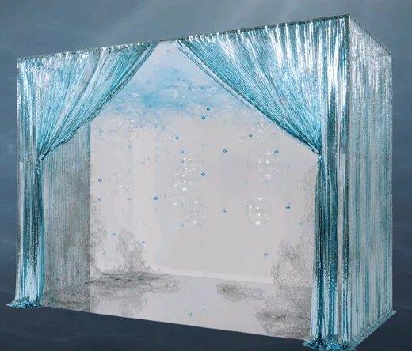
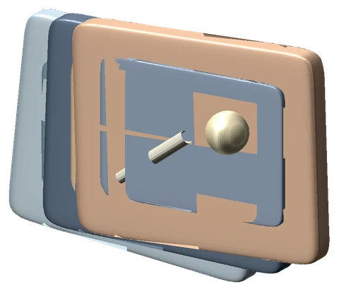
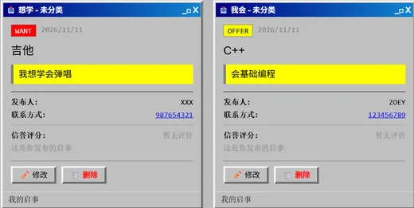
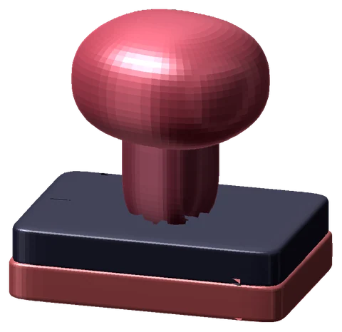

同理心EMPATHY
站在用户和相关参与者的角度，我们如何理解他们真实的需求、情绪、行为与处境？

设计如何发生？
站在用户和相关参与者的角度，我们如何理解他们真实的需求、情绪、行为与处境？
从发散的想法走向具体方案时，哪些值得保留，哪些需要舍弃或调整？
不同想法中的局部能否建立新的关联、重新组合，让设计逐渐成形？
面对现有条件，我们如何将洞察转化为概念、场景和解决方案？
我们如何捕捉环境、材料、视觉、交互和情绪中的细微变化，并将其转化为设计判断？
(have fun exploring)
 01.群居泡泡
01.群居泡泡《群居泡泡》以“粘连与共生”为主题。展板呈现了泡泡之间的连接方式，以及装置构件与空间的关系。

02.向上沉没游泳时，头穿出水面的一瞬间，声音、光线和对空间的判断会一起改变。《向上沉没》把这一刻放进可进入的装置，让观众在水与空气两种介质之间重新感受熟悉的世界。

03.Prove of Time一张照片留下了当时的画面，却未必留得住那一刻为什么触动你。这个项目从照片整理工具开始，尝试把那些稍纵即逝的感受一起记录下来。

04.技能互助角欢迎来到技能互助社区——一个用Windows 98怀旧美学构筑的赛博乌托邦。在这里，我们用像素风和经典灰蓝色窗口，打破现代网页的冰冷感，找回互联网最初的纯粹与温热。
这是一个属于所有人的技能交换所。没有算法焦虑，只有点对点的真诚连接与复古浪漫。
 05.武·境
05.武·境把手机摄像头当作练功时的一面镜子。武·境捕捉骨骼动作，与示范模板比对，再用画面叠加和语音提示帮助练习者调整姿势。

06.乙里乙气“好滴”“可以的”“稍等哈”背后，一张宣传品是怎样改出来的？作者从一次次接需求、做排版和返工的经历出发，整理设计工作里那些容易被忽略的判断。
 07.回家核
07.回家核设计说明
本装置以童年梦核为主题，依托身体、视听触五大感官要素搭建帐篷空间，还原干禧年老小区黄昏却增加了奇幻怪诞的氛围：以回家为主线，粉紫暮色.摇晃游乐设施、老街便利店、骤雨居民楼层层递进.
借沙中糖纸、摇摇车、冰柜.雨声等视觉与听觉意象，把朦胧怀旧的童年感官记忆变成荒诞不羁一场的圣梦，在越来越黑的天色中，体验者终于回到温暖的家中
 08.设计训练营期间成果
08.设计训练营期间成果此文件记录了设计训练营期间做的作品以及感悟，包括对figma技能的学习与提升，审美积累的作业，认识了很多同样有着设计兴趣的同学伙伴，在此期间，我的设计技能也得以提升，我开始模仿一些艺术设计的作品制作，并且看了一些不同的海报设计，开始根据现实的灵感设计作品，了解创意。并且在此途中，我开始了解与接触设计作品如何落地的问题，不断探索现实与创意的平衡，有了很多对设计新的思考